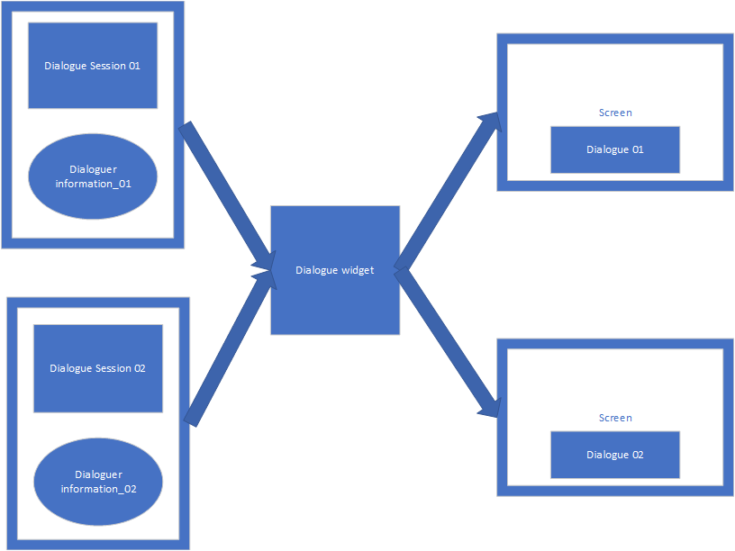
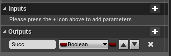
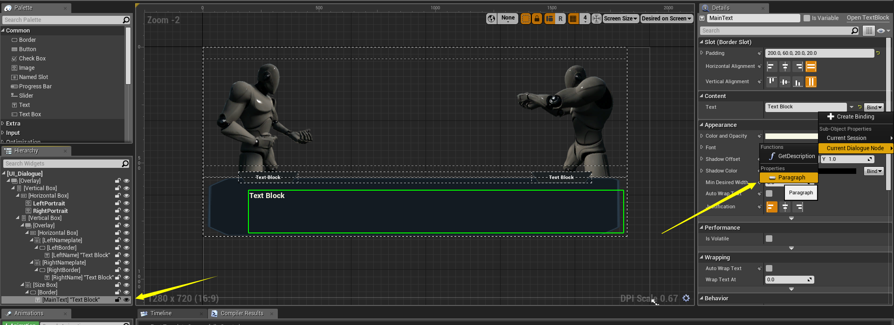
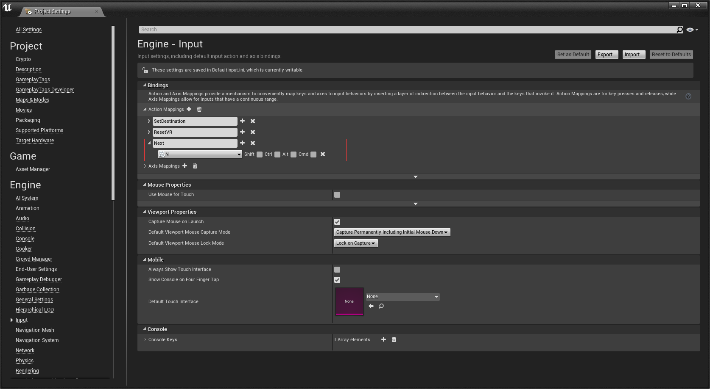
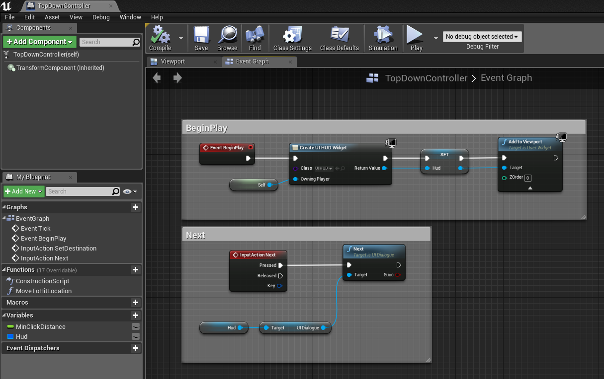
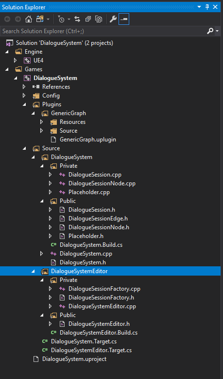
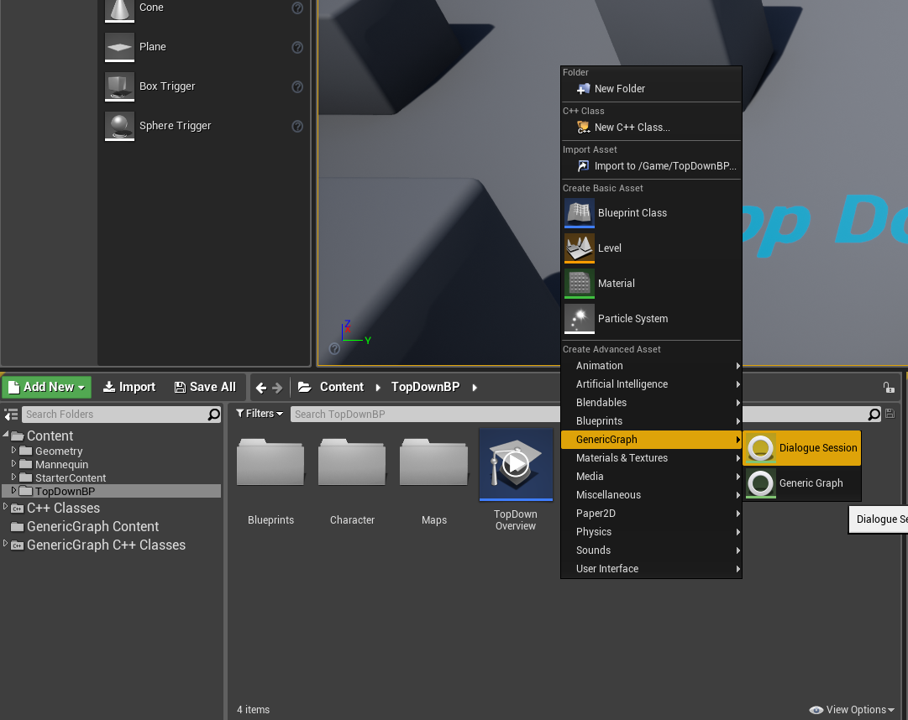
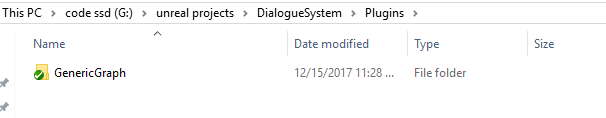
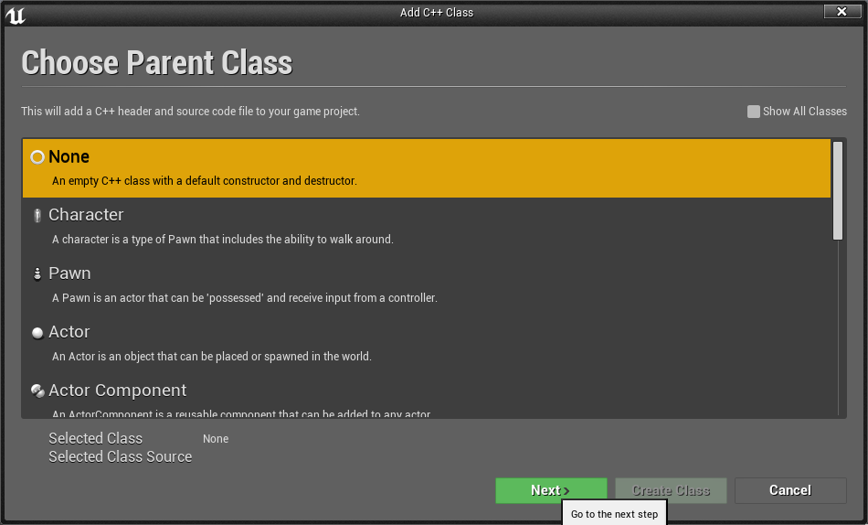
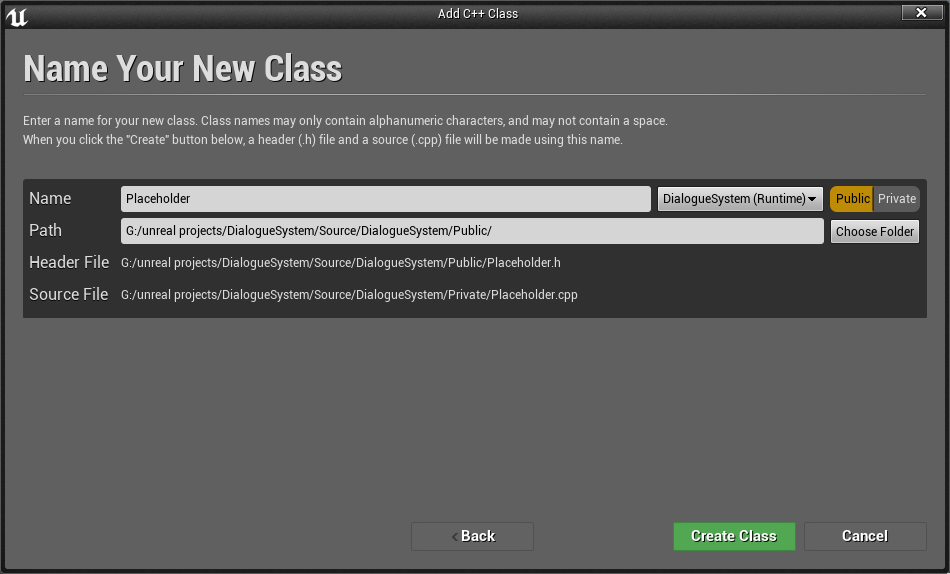

UE4 Dialogue System Part3
In this part, we will create a dialogue widget which use DialogueSession asset as input to display dialogue on screen.
{kind=link}
Step 1
Create an UMG widget: UI_Dialogue, like this:

Step 2
Create function: StartSession and Next.
StartSession’s function signature:

Next’s function signature:
Create some variables:
- CurrentSession: DialogueSession(type)
- CurrentDialogueNode: DialogueSessionNode(type)
- NodeIndex: Integer(type)
bind MainText’s Text field to CurrentDialogueNode’s Paragraph property, like this:
{kind=link}
{kind=link}
{kind=link}
Step 5
Create a DialogueSession asset: Dialogue_Test

Step 6
Create a UMG widget: UI_HUD, layout it like this:

create a bind for UI_Dialogue’s Visibility:

Step 7
Setup input action mapping: Next
{kind=link}
create an UI_HUD widget, add it to viewport and setup for Next event:
{kind=link}
Step 8
Add a test trigger into your test map

open Level Blueprint, setup BeginOverlap event like this:

Step 9
Play. move character to the position of test trigger, now you can see the dialogue widget. press N goto the next paragraph.
Done
That’s all in this part. In the next part, we wiil support dialoguer information such as: name, portrait image.
UE4 Dialogue System Part2
In this part, we will create a new asset type: DialogueSession.
Step 1
- Create header files: “DialogueSession.h”, “DialogueSessionNode.h”, “DialogueSessionEdge.h” in your {ProjectRoot}/Source/{ProjectName}/Public folder
- Create source files: “DialogueSession.cpp”, “DialogueSessionNode.cpp” in your {ProjectRoot}/Source/{ProjectName}/Private folder
- Regenerate solution file
- Open solution file
now your solution should looks like this:

Step 2
Edit {YourProject}.Build.cs, add a dependency: GenericGraphRuntime
PrivateDependencyModuleNames.AddRange(new string[] { "GenericGraphRuntime" });
Step 3
Implement class: UDialogueSessionNode
DialogueSessionNode.h
#pragma once
#pragma once
#include "CoreMinimal.h"
#include "GenericGraphNode.h"
#include "DialogueSessionNode.generated.h"
UENUM(BlueprintType)
enum class EDialoguerPostion : uint8
{
Left,
Right
};
UCLASS(Blueprintable)
class UDialogueSessionNode : public UGenericGraphNode
{
GENERATED_BODY()
public:
UDialogueSessionNode();
UPROPERTY(EditDefaultsOnly, BlueprintReadOnly, Category = "DialogueSession")
FText Paragraph;
UPROPERTY(EditDefaultsOnly, BlueprintReadOnly, Category = "DialogueSession")
EDialoguerPostion DialoguerPostion;
#if WITH_EDITOR
virtual FText GetNodeTitle() const override;
virtual void SetNodeTitle(const FText& NewTitle) override;
virtual FLinearColor GetBackgroundColor() const override;
#endif
};
DialogueSessionNode.cpp
#include "DialogueSessionNode.h"
#include "DialogueSession.h"
#define LOCTEXT_NAMESPACE "DialogueSessionNode"
UDialogueSessionNode::UDialogueSessionNode()
{
#if WITH_EDITORONLY_DATA
CompatibleGraphType = UDialogueSession::StaticClass();
ContextMenuName = LOCTEXT("ConextMenuName", "Dialogue Session Node");
#endif
}
#if WITH_EDITOR
FText UDialogueSessionNode::GetNodeTitle() const
{
return Paragraph.IsEmpty() ? LOCTEXT("EmptyParagraph", "(Empty paragraph)") : Paragraph;
}
void UDialogueSessionNode::SetNodeTitle(const FText& NewTitle)
{
Paragraph = NewTitle;
}
FLinearColor UDialogueSessionNode::GetBackgroundColor() const
{
UDialogueSession* Graph = Cast<UDialogueSession>(GetGraph());
if (Graph == nullptr)
return Super::GetBackgroundColor();
switch (DialoguerPostion)
{
case EDialoguerPostion::Left:
return Graph->LeftDialoguerBgColor;
case EDialoguerPostion::Right:
return Graph->RightDialoguerBgColor;
default:
return FLinearColor::Black;
}
}
#endif
#undef LOCTEXT_NAMESPACE
We extended the UGenericGraphNode, added two properties to the node:
- Paragraph: the dialogue content
- DialoguerPostion: indicate the dialoguer’s position(left or right).
Override the GetNodeTitle and SetNodeTitle method to use the Paragraph property as the node title.
Override the GetBackgroundColor method, change the node’s background color by dialoguer’s position
Step 4
Implement class: UDialogueSessionEdge
DialogueSessionEdge.h
#pragma once
#include "CoreMinimal.h"
#include "GenericGraphEdge.h"
#include "DialogueSessionEdge.generated.h"
UCLASS(Blueprintable)
class UDialogueSessionEdge: public UGenericGraphEdge
{
GENERATED_BODY()
public:
UPROPERTY(EditDefaultsOnly, BlueprintReadOnly, Category = "DialogueSession")
FText Selection;
};
We extended the UDialogueSessionEdge, added a Selection property, this will be used to implment dialogue branch.
Step 5
Implement class: UDialogueSession
DialogueSession.h:
#pragma once
#include "CoreMinimal.h"
#include "GenericGraph.h"
#include "DialogueSession.generated.h"
UCLASS(Blueprintable)
class DIALOGUESYSTEM_API UDialogueSession: public UGenericGraph
{
GENERATED_BODY()
public:
UDialogueSession();
UPROPERTY(EditDefaultsOnly, Category = "DialogueSession")
FLinearColor LeftDialoguerBgColor;
UPROPERTY(EditDefaultsOnly, Category = "DialogueSession")
FLinearColor RightDialoguerBgColor;
};
DialogueSession.cpp
#include "DialogueSession.h"
#include "DialogueSessionNode.h"
#include "DialogueSessionEdge.h"
#define LOCTEXT_NAMESPACE "DialogueSession"
UDialogueSession::UDialogueSession()
{
NodeType = UDialogueSessionNode::StaticClass();
EdgeType = UDialogueSessionEdge::StaticClass();
LeftDialoguerBgColor = FLinearColor::Black;
RightDialoguerBgColor = FLinearColor(0.93f, 0.93f, 0.93f, 1.f);
Name = "DialogueSession";
}
#undef LOCTEXT_NAMESPACE
We created a class UDialogueSession which inherit from UGenericGraph, this class will be the new asset type.
Warning
DIALOGUESYSTEM_API should changed to {YOURPROJECT}_API.
Step 6
We need to create an asset factory which inherit from UFactory, but this class can’t add to your game project directly, because UFactory are in the module UnrealEd, this is an editor module, you can’t pass the Shipping build if your game depends on any editor module.
Solution: creating an editor module for your game project, here is an tutorial.
After created an editor module, creating “DialogueSessionFactory.h” and “DialogueSessionFactory.cpp” in {YourProject}/Source/{YourProjectEditor}/Private and regenerate solution file.
Your solution should looks like this now:
Step 7
Edit the {YourProjectEditor}.Build.cs, add dependency module: UnrealEd, GenericGraphRuntime, {YourGameProject} and include path: {YourGameProject}/Public
PublicIncludePaths.AddRange(new string[]{"DialogueSystem/Public"});
PrivateDependencyModuleNames.AddRange(new string[] { "UnrealEd", "GenericGraphRuntime", "DialogueSystem" });
Step 8
Implement DialogueSessionFactory
DialogueSessionFactory.h
#pragma once
#include "CoreMinimal.h"
#include "Factories/Factory.h"
#include "DialogueSessionFactory.generated.h"
UCLASS()
class UDialogueSessionFactory : public UFactory
{
GENERATED_BODY()
public:
UDialogueSessionFactory();
virtual UObject* FactoryCreateNew(UClass* Class, UObject* InParent, FName Name, EObjectFlags Flags, UObject* Context, FFeedbackContext* Warn) override;
virtual FText GetDisplayName() const override;
virtual FString GetDefaultNewAssetName() const override;
};
DialogueSessionFactory.cpp
#include "DialogueSessionFactory.h"
#include "DialogueSession.h"
#define LOCTEXT_NAMESPACE "DialogueSessionFactory"
UDialogueSessionFactory::UDialogueSessionFactory()
{
bCreateNew = true;
bEditAfterNew = true;
SupportedClass = UDialogueSession::StaticClass();
}
UObject* UDialogueSessionFactory::FactoryCreateNew(UClass* Class, UObject* InParent, FName Name, EObjectFlags Flags, UObject* Context, FFeedbackContext* Warn)
{
return NewObject<UObject>(InParent, Class, Name, Flags | RF_Transactional);
}
FText UDialogueSessionFactory::GetDisplayName() const
{
return LOCTEXT("FactoryName", "Dialogue Session");
}
FString UDialogueSessionFactory::GetDefaultNewAssetName() const
{
return "DialogueSession";
}
#undef LOCTEXT_NAMESPACE
Step 9
Compile the solution, open the editor if compile succeeded. right click in your content browser, you can create DialogueSession asset now.
{kind=link}
UE4 Dialogue System Part1
Introduction
This tutorial create a Fire Emblem-like dialogue system in UE4 with my GenericGraph plugin.

Prerequisite:
- UE4 version: 4.18.2 or higher
- C++ development enviroment(Visual Studio on Windows or Xcode on Mac)
- Some experience with UE4, can make simple UI with UMG
In this part, we wiil create a demo project and compile the plugin.
{kind=link}
Step 2
Open your porject’s root folder, create a folder named “Plugins”, clone GenericGraph into the “Plugins” folder.
Step 3
In your editor, click “File->New C++ Class”.

Click “Next”.
{kind=link}
Set the class name to “Placeholder”
{kind=link}
Click “Create Class”.
Note
Now we have created a c++ class: Placeholder, as the name implies, it’s a placeholder, we don’t need it anymore, we just need a c++ class to generate a c++ project.
Right click your “YourProject.uproject” file, click “Generate Visual Studio project files”.

Open YourPorject.sln file, you should see the GenericGraph plugin’s files now.

Close your project editor, then compile the c++ solution(F7).
Step 4
If compile succeeded, open your editor again, right click in your content browser, you can create GenericGraph asset now.

Done
That’s all in this part, you have created a project and compiled the GenericGraph plugin, we will add a “DialogueSession” asset in the next part, then say goodbye to c++ and dive into blueprint.